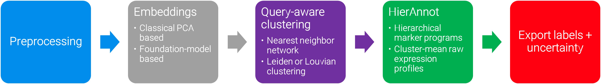
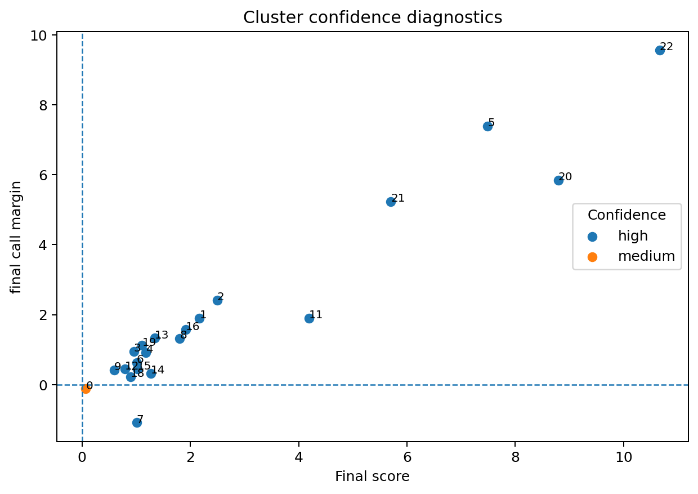
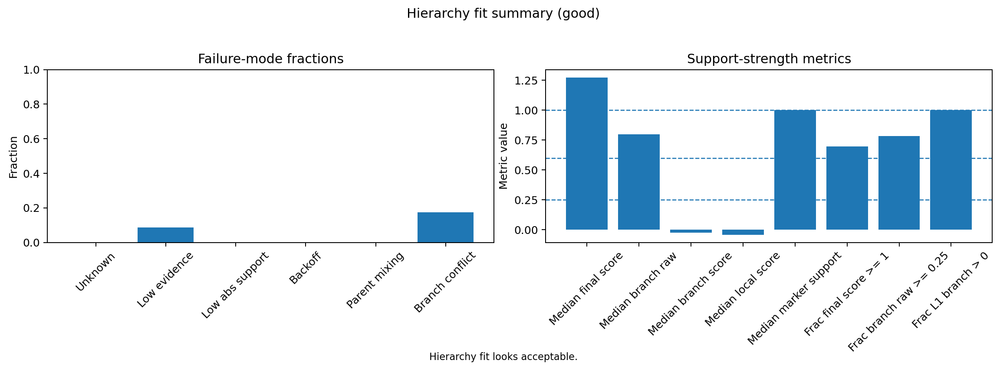
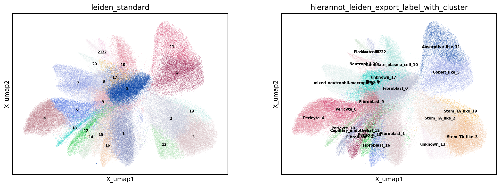
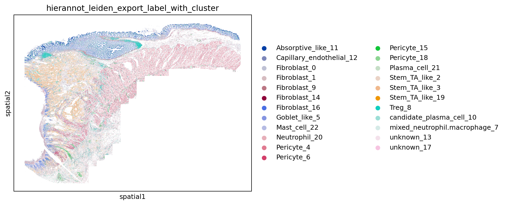
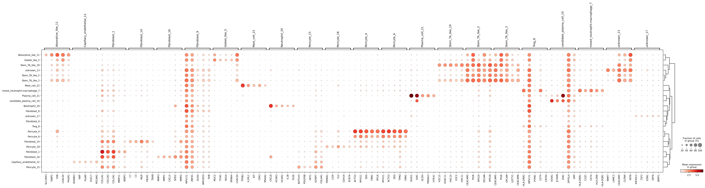
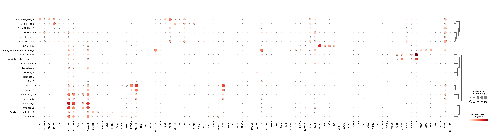
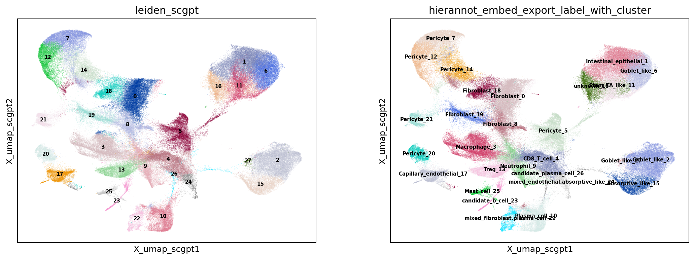
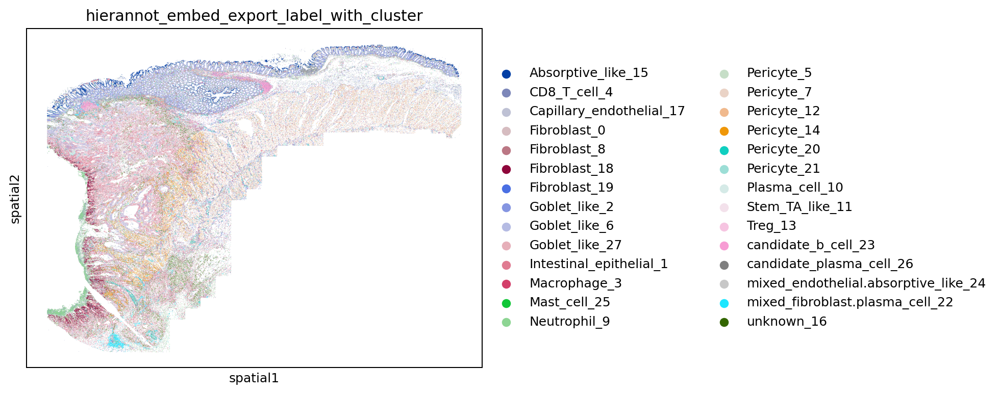
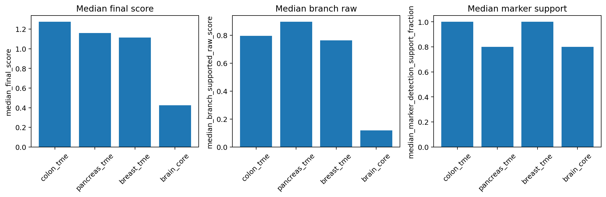

![]()
flowchart TD
A[Choose a tissue-appropriate hierarchy] --> B[Score each node from marker evidence]
B --> C[Adjust with sibling competition]
C --> D[Incorporate marker detection support]
D --> E[Propagate best-child support up each branch]
E --> F{"Is the current winner strong enough<br/>and well separated?"}
F -- Yes --> G[Descend to the best-supported child]
F -- No --> H[Stop at the deepest supported ancestor]
G --> I{"Reached a leaf or<br/>failed a downstream gate?"}
I -- No --> F
I -- Yes --> J[Finalize routed label]
H --> J
J --> K[Apply conservative export logic:<br/>mixed, candidate, or unknown when needed]
1 Introduction
Modern spatial pipelines excel at representation learning, graph construction, and clustering, but the real bottleneck lies in the next step: interpreting clusters and assigning biologically meaningful names. That interpretation is valuable but often manual, iterative, and difficult to standardize across projects.
HierAnnot is an analyst-assist annotation layer for cluster interpretation in spatial transcriptomics workflows. It is designed to accelerate this step while keeping experts in control. It provides uncertainty-aware, hierarchy-aware cell-type hints that are fast to inspect and iterate on. While it is NOT a replacement for manual analysis or a substitute for iterative refinement (for example, subclustering broad populations), HierAnnot is a structured annotation engine with four practical advantages:
- Hierarchy-aware calls: broad-to-specific label routing follows biological structure.
- Explicit uncertainty: weak or conflicted cases are exported as
unknown,mixed_*, orcandidate_*rather than over-called labels. - Auditability: outputs keep both final calls and supporting evidence.
- Flexible integration: works with standard pipelines and with foundation-model embeddings.
This flexibility extends to modern embedding-based workflows where a foundation model can provide strong embeddings and even reveal finer clustering structure at the same nominal resolution, but label/cluster boundaries remain dataset-dependent as tissue context, assay conditions, and segmentation properties can shift biological decision boundaries.
A practical pattern pairs query-aware clustering with hierarchy-constrained naming:
raw data
-> preprocessing
-> embedding generation (classical or foundation model)
-> graph + query-aware clustering
-> hierarchical annotation (HierAnnot)
-> uncertainty-aware export labelsIn this design, clustering remains query-aware and exploratory, while annotation remains biologically interpretable, uncertainty-aware, and comparable across clustering strategies. In this role, HierAnnot acts as the bridge between cluster geometry and interpretable biological hypotheses.

HierAnnot starts from a tissue-appropriate marker hierarchy, which acts as the main biological prior for annotation. In practice, the package provides several ways to facilitate this step, including built-in hierarchy catalogues, direct matching helpers, and ranked suggestions. The detailed code workflow for choosing and comparing hierarchies appears in latter Section 6. Once a reasonable hierarchy is selected, HierAnnot combines multiple evidence sources to decide how far to descend and when to stop conservatively.
2 A Concise View Of The Scoring And Routing Logic
At a high level, HierAnnot combines several evidence sources at each node in the hierarchy: marker enrichment, competition against sibling programs, marker-detection support, and support propagated from child nodes. The algorithm then descends only when the local winner is both strong enough and sufficiently separated from nearby alternatives; otherwise, it backs off to the deepest supported ancestor. This is what makes the routing conservative rather than over-eager.
That logic is separate from export behavior. After routing identifies the best-supported level in the hierarchy, low-margin or conflicted outcomes can still be exported as mixed_*, candidate_*, or unknown labels instead of being over-called as a fully resolved cell type.
The detailed equations are included below for readers who want to know more about the scoring mechanism.
Detailed scoring and routing formulation
HierAnnot uses two complementary scores at each marker program: a raw enrichment score and a sibling-specific decision score.
For cluster \(c\) and node/program \(n\), the module-style raw enrichment score is:
\[ R_{c,n}=\overline{x}_{\text{markers}}-\overline{x}_{\text{matched-controls}}-w_{\text{neg}}\,\overline{x}_{\text{negative markers}} \]
Matched controls are sampled from genes with similar bulk abundance, which reduces bias from highly expressed genes.
A sibling-competition decision score is then computed from robust z-scores of raw enrichment:
\[ Z_{c,n}=\frac{R_{c,n}-\operatorname{median}(R_{\cdot,n})}{\text{scale}_n}, \qquad D_{c,n}=\left(Z_{c,n}-\max_{j\in\text{sibs}(n),\,j\neq n} Z_{c,j}\right)\left(0.5+0.5f_{\text{detect}}\right) \]
where \(f_{\text{detect}}\) is marker-detection support, and \(\text{scale}_n\) is a robust dispersion term (MAD-based when available).
Routing uses a branch-supported score that mixes local evidence with best-child support:
\[ L_{c,n}=\big(\alpha R_{c,n}+(1-\alpha)g(R_{c,n})D_{c,n}\big)\,s(m_n) \]
\[ B_{c,n}=\begin{cases} L_{c,n}, & n\text{ is leaf}\\ (1-\beta_n)L_{c,n}+\beta_n\max\big(0,\max_{d\in\text{child}(n)}B_{c,d}\big), & n\text{ internal} \end{cases} \]
At each level, HierAnnot selects \(n^*=\arg\max B_{c,n}\) among siblings, descends only when score and margin gates are met, and otherwise backs off to the deepest supported ancestor. This keeps labels specific when evidence is strong and conservative when evidence is weak.
Export is then uncertainty-aware but separate from routing: small final-call margins can be exported as mixed labels, root-unresolved but strongly supported leaves can be exported as candidate labels, and low-support final calls can optionally be exported as unknown.
3 Installation
The source code and wheel file for HierAnnot python package are located at here. You can either download the latest wheel file for pip installation or install the package directly using command line like below in your python environment.
Terminal
pip install git+https://github.com/Nanostring-Biostats/CosMx-Analysis-Scratch-Space.git#subdirectory=_code/HierAnnotLike other items in our CosMx Analysis Scratch Space, the usual caveats and license apply.
Illustration Dataset
To illustrate usage, this post uses a publicly available CosMx® whole-transcriptomics single-slide dataset on human colon cancer FFPE tissue that you can download from the Bruker Spatial Biology webpage. Please refer to earlier post on how to generate AnnData object from either post-analyzed Seurat object or the flat files exported by AtoMx® SIP.
R users: If your data is already in Seurat and you prefer to stay in R, you can use HierAnnot through R’s reticulate package. See Section 7 for more details.
4 Basic Usage: Standard Clustering -> HierAnnot
This first illustration follows a familiar workflow and applies HierAnnot after standard Leiden clustering. Think of this as a first-pass naming workflow: fast, explicit, and reviewable.
For your own dataset, the main places to adjust are:
- clustering settings (
n_neighbors, Leidenresolution), - hierarchy selection (
match_builtin_hierarchy(...)andget_builtin_hierarchy(...)),
- export behavior in
make_cluster_annotation_export_summary(...)(unknown_*,mixed_*,unresolved_candidate_*controls).
In general, HierAnnotPipeline(...) defaults are a good starting point and usually do not require manual tuning.
4.1 Step 1: Default preprocessing and clustering
Code
import anndata as ad
import scanpy as sc
import matplotlib.pyplot as plt
from pathlib import Path
# setup output folder
out_dir = Path("output")
out_dir.mkdir(parents=True, exist_ok=True)
# read in anndata object
adata = ad.read_h5ad("path/to/data.h5ad")
# Minimal assumed inputs:
# - adata.layers["counts"] (raw integer counts, required)
# - adata.obsm["spatial"] (spatial coordinates, for visualization)
cluster_key = "leiden_standard"
# Select highly variable genes from raw counts for high-plex datasets.
flag_hvg = adata.n_vars > 5000
if flag_hvg:
sc.pp.highly_variable_genes(
adata, flavor="seurat_v3", n_top_genes=3000, layer="counts"
)
# Normalize and log-transform for PCA / neighborhood graph.
sc.pp.normalize_total(adata, target_sum=1e4)
sc.pp.log1p(adata)
# PCA uses highly_variable genes automatically when flag_hvg=True.
sc.pp.pca(adata, use_highly_variable=flag_hvg)
# Common user-tuning region: n_neighbors, n_pcs, and Leiden resolution.
sc.pp.neighbors(adata, n_neighbors=15, n_pcs=50)
sc.tl.umap(adata)
sc.tl.leiden(adata, key_added=cluster_key, resolution=1.0)4.2 Step 2: HierAnnot scoring and export summary
See the later Section 6 for the full exploration and comparison workflow around hierarchies. For a quick start, match_builtin_hierarchy("your tissue description") is usually a strong first-pass choice before deeper hierarchy comparison.
Code
from hierannot import (
HierAnnotPipeline,
get_builtin_hierarchy,
match_builtin_hierarchy,
aggregate_anndata_to_cluster_means,
make_cluster_annotation_export_summary,
)
# Choose an appropriate built-in hierarchy.
# `list_builtin_hierarchies()` to see all available options.
# `match_builtin_hierarchy()` returns the single best-matching built-in name directly.
hierarchy_name = match_builtin_hierarchy("colon cancer")
root_programs = get_builtin_hierarchy(hierarchy_name)
# Aggregate raw counts across all genes by cluster for HierAnnot.
cluster_means = aggregate_anndata_to_cluster_means(
adata,
cluster_key=cluster_key,
source="layer",
source_key="counts",
method="mean",
uppercase_genes=True,
)
# Most users should keep pipeline defaults.
# The main dataset-dependent knobs are:
# - root_programs: choose the right hierarchy for tissue/context
# - preset: "auto" for automatically setting control variables based on the size of input RNA panel
pipe = HierAnnotPipeline(
root_programs=root_programs,
preset="auto",
input_type="raw_cluster_means",
)
# Score computation and hierarchical routing for each cluster.
result = pipe.fit_score(cluster_means)
# Apply export logic on fitted results.
cluster_export = make_cluster_annotation_export_summary(
result,
# label_with_cluster=True retains cluster identity in exported labels
# (e.g., "CD8_T_3" labels for original cluster "3"), helpful for review.
label_with_cluster=True,
# These control only export behavior (unknown/mixed/candidate),
# without altering the underlying hierarchy routing.
unknown_on_low_confidence=True,
unknown_branch_raw_threshold=0.1,
mixed_on_parent_mixing=True,
unresolved_candidate_min_score=1.0,
unresolved_candidate_min_raw_score=0.2,
# To update the hierarchy routing with new thresholds and weights,
# set rerun_decision = True along with updated values for relevant control
# arguments (e.g. weak_raw_score_threshold, min_leaf_raw_score, etc).
)
# save full cluster annotation summary with per-level details
adata.uns[f"hierannot_{cluster_key}"] = cluster_export
cluster_export.to_csv(out_dir / "cluster_export_leiden.csv", index=False)
print(cluster_export.head(10))| cluster_id | annot_label | annot_export_label_with_cluster | annot_export_label | annot_export_status | annot_confidence | annot_final_call_margin |
|---|---|---|---|---|---|---|
| 15 | Pericyte | Pericyte_15 | Pericyte | resolved | high | 0.4435972 |
| 0 | Fibroblast | Fibroblast_0 | Fibroblast | resolved | medium | -0.1237290 |
| 4 | Pericyte | Pericyte_4 | Pericyte | resolved | high | 0.9173769 |
| 7 | Neutrophil | mixed_neutrophil.macrophage_7 | mixed_neutrophil.macrophage | mixed | high | -1.0905187 |
| 14 | Fibroblast | Fibroblast_14 | Fibroblast | resolved | high | 0.3192848 |
| 8 | Treg | Treg_8 | Treg | resolved | high | 1.3181929 |
| 12 | Capillary endothelial | Capillary_endothelial_12 | Capillary endothelial | resolved | high | 0.4395236 |
| 18 | Pericyte | Pericyte_18 | Pericyte | resolved | high | 0.2277461 |
| 6 | Pericyte | Pericyte_6 | Pericyte | resolved | high | 0.6276592 |
| 10 | Unresolved | candidate_plasma_cell_10 | candidate_plasma_cell | unknown | none | NA |
HierAnnot provides utility functions to inspect naming confidence and hierarchy fit before committing to downstream interpretation.
Code
from hierannot import (
plot_cluster_confidence,
plot_hierarchy_fit_summary,
)
# Confidence diagnostics.
fig, _ = plot_cluster_confidence(result)
fig.savefig(out_dir / "fig_diag_confidence.png", dpi=180, bbox_inches="tight")
# Hierarchy fit summary
fig, _ = plot_hierarchy_fit_summary(result)
fig.savefig(out_dir / "fig_diagnostic_hierarchy_fit.png", dpi=180, bbox_inches="tight")

4.3 Step 3: Add cell-level results and inspect outputs
Code
from hierannot import expand_cluster_annotation_to_cells
# create join table for per-cell annotation
cell_labels = expand_cluster_annotation_to_cells(
cluster_assignments=adata.obs[cluster_key],
cluster_summary=cluster_export,
cluster_key=cluster_key,
include_columns=[
"annot_export_label",
"annot_export_label_with_cluster",
],
prefix="hierannot_leiden", # for renaming the column names
)
adata.obs = adata.obs.join(cell_labels.drop(columns=[cluster_key], errors="ignore"))
# Visualize the named label-with-cluster on expression umap and in space
result_column = "hierannot_leiden_export_label_with_cluster"
sc.pl.embedding(adata, basis="X_umap", color=[cluster_key, result_column], legend_loc="on data", ncols=2, show=False)
plt.savefig(out_dir / "fig_umap_std_cluster_hierannot.png", dpi=180, bbox_inches="tight")
sc.pl.embedding(adata, basis="spatial", color=result_column, show=False)
plt.savefig(out_dir / "fig_spatial_hierannot_leiden.png", dpi=180, bbox_inches="tight")

4.4 Step 4: Marker Validation For Naming
After assigning cluster-level labels, validate naming with marker differential expression. The example below wraps robust marker identification into a reusable function that finds top robust markers for each cluster. Those outputs are then used downstream to generate diagnostic plots for naming review.
Code
import numpy as np
from hierannot import get_builtin_hierarchy
def identify_top_robust_markers_by_cluster(
adata,
group_key,
min_cells_per_group=10,
max_cells_per_group=5000,
padj_cutoff=0.05,
logfc_cutoff=0.25,
min_pct_expr=0.10,
rank_key="marker_rankings",
random_state=0,
):
"""Identify robust markers per cluster from differential ranking.
The function ranks genes on a filtered/downsampled copy of the input AnnData
for stable runtime and marker statistics, then returns only robust markers
with threshold flags and per-group robust rank.
"""
groups = adata.obs[group_key].astype(str).fillna("unassigned")
# Drop tiny groups that can make DE unstable.
group_sizes = groups.value_counts(dropna=False)
keep_groups = group_sizes[group_sizes >= min_cells_per_group].index
keep_mask = groups.isin(keep_groups)
adata_rank = adata[keep_mask].copy()
adata_rank.obs[group_key] = groups.loc[keep_mask].astype("category")
# Optional per-group cap for faster and more stable ranking runtime.
if max_cells_per_group and max_cells_per_group > 0:
rng = np.random.default_rng(random_state)
g = adata_rank.obs[group_key].astype(str)
idx_keep = []
for _, idx in g.groupby(g).groups.items():
idx = np.array(list(idx))
if len(idx) > max_cells_per_group:
pick = rng.choice(idx, size=max_cells_per_group, replace=False)
idx_keep.extend(pick.tolist())
else:
idx_keep.extend(idx.tolist())
adata_rank = adata_rank[idx_keep].copy()
adata_rank.obs[group_key] = adata_rank.obs[group_key].astype(str).astype("category")
if adata_rank.n_obs == 0:
raise ValueError("No cells left after filtering marker groups.")
if adata_rank.obs[group_key].nunique() < 2:
raise ValueError("Need >=2 groups for marker ranking.")
sc.tl.rank_genes_groups(
adata_rank,
groupby=group_key,
method="wilcoxon",
pts=True,
key_added=rank_key,
)
markers_df = sc.get.rank_genes_groups_df(adata_rank, group=None, key=rank_key)
robust_markers = markers_df.copy()
robust_markers["meets_padj"] = robust_markers["pvals_adj"] <= padj_cutoff
robust_markers["meets_logfc"] = robust_markers["logfoldchanges"] >= logfc_cutoff
if "pct_nz_group" in robust_markers.columns:
robust_markers["meets_min_pct_expr"] = robust_markers["pct_nz_group"] >= min_pct_expr
else:
robust_markers["meets_min_pct_expr"] = True
robust_markers = robust_markers[
robust_markers["meets_padj"]
& robust_markers["meets_logfc"]
& robust_markers["meets_min_pct_expr"]
].copy()
robust_markers = robust_markers.sort_values(
["group", "pvals_adj", "logfoldchanges"],
ascending=[True, True, False],
)
robust_markers["robust_rank_within_group"] = robust_markers.groupby("group").cumcount() + 1
return robust_markers
# identify top markers for standard leiden clusters and visualize along with hierannot names
marker_group_key = "hierannot_leiden_export_label_with_cluster"
top_n_dotplot = 5
robust_markers = identify_top_robust_markers_by_cluster(
adata=adata,
group_key=marker_group_key,
min_cells_per_group=10,
max_cells_per_group=5000,
)
robust_markers.to_csv(out_dir / "marker_rankings_robust.csv", index=False)
if robust_markers.empty:
raise ValueError("No robust markers passed thresholds. Relax padj/logFC/min_pct_expr cutoffs.")
sc.tl.dendrogram(adata, groupby=marker_group_key)
# Generate dot plot for top 5 markers per cluster.
marker_dict_dotplot = (
robust_markers.groupby("group")["names"]
.apply(lambda s: s.head(top_n_dotplot).tolist())
.to_dict()
)
marker_dict_dotplot = {k: v for k, v in marker_dict_dotplot.items() if len(v) > 0}
sc.pl.dotplot(
adata,
var_names=marker_dict_dotplot,
groupby=marker_group_key,
dendrogram=True,
show=False,
)
plt.savefig(out_dir / "fig_marker_dotplot.png", dpi=180, bbox_inches="tight")In practice, DE-ranked markers can be influenced by tissue background composition. A canonical-marker panel is often easier to interpret for naming validation and discussion with domain experts.
Code
# Canonical markers from the selected hierarchy, filtered to genes present in this dataset.
def _collect_canonical_markers(root_nodes, adata_var_names):
present_upper = {str(g).upper(): str(g) for g in adata_var_names}
seen = set()
canonical = []
stack = list(root_nodes)
while stack:
node = stack.pop(0)
for g in getattr(node, "positive_markers", []) or []:
gu = str(g).upper()
if gu in present_upper and gu not in seen:
seen.add(gu)
canonical.append(present_upper[gu])
stack.extend(getattr(node, "children", []) or [])
return canonical
canonical_roots = get_builtin_hierarchy("colon_tme")
canonical_markers = _collect_canonical_markers(canonical_roots, adata.var_names)
if len(canonical_markers) == 0:
raise ValueError("No canonical markers from colon_tme were found in adata.var_names.")
sc.pl.dotplot(
adata,
var_names=canonical_markers,
groupby=marker_group_key,
dendrogram=True,
show=False,
)
plt.savefig(out_dir / "fig_marker_canonical_dotplot.png", dpi=180, bbox_inches="tight")

colon_tme markers (restricted to genes present in this dataset) provide a biologically grounded validation panel for label interpretation.
5 Advanced Usage: Foundation-Model Embeddings -> HierAnnot
HierAnnot works equally well when cluster structure comes from embeddings generated by pretrained foundation models such as scGPT (Cui et al. 2024).
In this pipeline, the annotation step is decoupled from how clusters were produced. Whether clusters come from classical PCA or from a foundation-model embedding space, HierAnnot aggregates raw expression counts per cluster and applies the same hierarchical decision logic. This makes it a practical bridge between richer embedding structure and interpretable biological naming hints.
Here, the cell embeddings were obtained using a custom scGPT-style model pre-trained on various CosMx datasets of diverse tissue types.
Code
from hierannot import (
cluster_anndata_on_representation,
aggregate_anndata_to_cluster_means,
make_cluster_annotation_export_summary,
expand_cluster_annotation_to_cells,
)
# The foundation-model embedding is stored at `adata.obsm[embedding_key]` layer
model_name="scgpt"
embedding_key = f"X_emb_{model_name}"
cluster_key = f"leiden_{model_name}"
# Cluster directly on the embedding; no PCA since the embedding is already compact.
# cluster_anndata_on_representation handles neighbor graph, Leiden, and UMAP in one call.
cluster_anndata_on_representation(
adata,
source="obsm",
source_key=embedding_key,
cluster_key=cluster_key,
# names for embedding-derived data
neighbors_key=f"X_neighbors_{model_name}",
umap_key=f"X_umap_{model_name}",
n_neighbors=15,
leiden_resolution=1.0,
random_state=0,
compute_umap=True,
copy=False, # modifies adata in place
do_pca=False,
)
# Aggregate raw counts by the new embedding-derived clusters.
cluster_means_embed = aggregate_anndata_to_cluster_means(
adata,
cluster_key=cluster_key,
source="layer",
source_key="counts",
method="mean",
uppercase_genes=True,
)
# pipe is the same HierAnnotPipeline from the standard-clustering section above.
result_embed = pipe.fit_score(cluster_means_embed)
cluster_export_embed = make_cluster_annotation_export_summary(
result_embed,
# Keep cluster ID in exported labels for easier embedding-cluster QA.
label_with_cluster=True,
# Tune these thresholds when you want stricter or looser uncertainty export.
unknown_on_low_confidence=True,
unknown_branch_raw_threshold=0.1,
mixed_on_parent_mixing=True,
unresolved_candidate_min_score=1.0,
unresolved_candidate_min_raw_score=0.2,
)
cell_labels_embed = expand_cluster_annotation_to_cells(
cluster_assignments=adata.obs[cluster_key],
cluster_summary=cluster_export_embed,
cluster_key=cluster_key,
include_columns=["annot_export_label_with_cluster", "annot_export_label", "annot_export_status"],
prefix="hierannot_embed",
)
adata.obs = adata.obs.join(
cell_labels_embed.drop(columns=[cluster_key], errors="ignore")
)

6 Choosing A Hierarchy
The annotation result depends on hierarchy choice, so selecting a tissue-appropriate hierarchy is a key practical step.
HierAnnot ships with rich tissue-flavored built-in hierarchies. Users can discover options with list_builtin_hierarchies(), get a direct automatic suggestion with match_builtin_hierarchy(description), or inspect ranked candidates with suggest_builtin_hierarchies(description). For a complete and maintained catalog of built-ins, plus additional usage guidance, refer to the package README.
The practical workflow is:
- Call
list_builtin_hierarchies()to see all available options. - Call
match_builtin_hierarchy(description)for the single best-matching built-in, orsuggest_builtin_hierarchies(description)for a ranked DataFrame of candidates. - If the tissue type is ambiguous, run several candidates and compare fit diagnostics on your own cluster means profiles.
Code
from hierannot import (
list_builtin_hierarchies,
match_builtin_hierarchy,
suggest_builtin_hierarchies,
get_builtin_hierarchy,
format_hierarchy_tree,
)
# Step 1: inspect all available built-ins
print(list_builtin_hierarchies())
# Step 2: match_builtin_hierarchy() returns a single best name;
# suggest_builtin_hierarchies() returns a ranked DataFrame for broader exploration.
best = match_builtin_hierarchy("colon cancer")
print(best) # e.g. 'colon_tme'
ranked = suggest_builtin_hierarchies("colon cancer", top_k=5)
print(ranked[["name", "score", "tissue_scope"]])
# visualize the chosen hierarchy as a tree
print(format_hierarchy_tree(get_builtin_hierarchy(best)))list_builtin_hierarchies()
| name | category | tissue_scope | description | n_root_programs | n_total_programs |
|---|---|---|---|---|---|
| brain_core | brain | brain | Core neuro hierarchy for brain-like samples. | 6 | 8 |
| immune_core | immune | pan-tissue | Pan-tissue immune hierarchy. | 6 | 13 |
| solid_tissue_core | solid_tissue | pan-solid-tissue | Major non-immune solid tissue lineages. | 4 | 8 |
| breast_tme | tme | breast | Breast-flavored tissue microenvironment hierarchy. | 5 | 23 |
| colon_tme | tme | colon | Colon-flavored tissue microenvironment hierarchy. | 5 | 23 |
| kidney_tme | tme | kidney | Kidney-flavored tissue microenvironment hierarchy. | 5 | 25 |
| liver_tme | tme | liver | Liver-flavored tissue microenvironment hierarchy. | 5 | 22 |
| lung_tme | tme | lung | Lung-flavored tissue microenvironment hierarchy. | 5 | 23 |
| pancreas_tme | tme | pancreas | Pancreas-flavored tissue microenvironment hierarchy. | 5 | 23 |
| skin_tme | tme | skin | Skin-flavored tissue microenvironment hierarchy. | 5 | 22 |
| tme_core | tme | pan-solid-tissue | Combined solid tissue plus immune hierarchy for mixed tissue microenvironments. | 5 | 22 |
| tonsil_tme | tme | tonsil | Tonsil-flavored tissue microenvironment hierarchy. | 5 | 22 |
colon cancer.
| name | score | tissue_scope |
|---|---|---|
| colon_tme | 3 | colon |
| immune_core | 0 | pan-tissue |
| solid_tissue_core | 0 | pan-solid-tissue |
| brain_core | 0 | brain |
| tme_core | 0 | pan-solid-tissue |
Formatted tree returned by format_hierarchy_tree() for built-in colon_tme hierarchy.
- Intestinal epithelial (+6, -4, children=3)
- Absorptive-like (+5, -1, children=0)
- Goblet-like (+5, -1, children=0)
- Stem/TA-like (+5, -1, children=0)
- Fibroblast (+5, -4, children=0)
- Endothelial (+5, -3, children=1)
- Capillary endothelial (+5, -2, children=0)
- Mural (+5, -2, children=1)
- Pericyte (+5, -6, children=0)
- Immune (+5, -2, children=6)
- T cell (+5, -2, children=3)
- CD4 T cell (+5, -2, children=0)
- CD8 T cell (+5, -1, children=0)
- Treg (+5, -2, children=0)
- B cell (+5, -2, children=1)
- Plasma cell (+5, -2, children=0)
- NK cell (+5, -2, children=0)
- Myeloid (+5, -2, children=3)
- Macrophage (+5, -2, children=0)
- Monocyte (+5, -2, children=0)
- Dendritic cell (+5, -2, children=0)
- Mast cell (+5, -2, children=0)
- Neutrophil (+5, -2, children=0)Code
from hierannot import (
get_builtin_hierarchy,
HierAnnotPipeline,
compare_hierarchy_fit,
plot_compare_hierarchy_fit,
)
# Step 3: compare fit across a set of candidate hierarchies
# here I include colon, breast, pancreas, brain for a cross-tissue perspective
candidate_names = ["colon_tme", "breast_tme", "pancreas_tme", "brain_core"]
results_fit = {}
for name in candidate_names:
pipe_i = HierAnnotPipeline(
root_programs=get_builtin_hierarchy(name),
preset="auto",
input_type="raw_cluster_means",
)
results_fit[name] = pipe_i.fit_score(cluster_means)
fit_df = compare_hierarchy_fit(results_fit)
print(fit_df[["name", "hierarchy_fit_status", "fit_rank_score", "fit_rank"]])
# visualize the fit outcomes
fig, ax = plot_compare_hierarchy_fit(fit_df)
fig.savefig(out_dir / "fig_hierarchy_fit_compare.png", dpi=180, bbox_inches="tight")| name | hierarchy_fit_status | fit_rank_score | fit_rank |
|---|---|---|---|
| colon_tme | good | 3.689482 | 1 |
| pancreas_tme | good | 3.615561 | 2 |
| breast_tme | good | 3.483878 | 3 |
| brain_core | poor | 1.790184 | 4 |

6.1 Building Your Own Hierarchy
If built-ins are close but not exact, a practical pattern is to start from a built-in and replace one branch.
Code
from hierannot import MarkerProgram, get_builtin_hierarchy, HierAnnotPipeline
roots = get_builtin_hierarchy("breast_tme")
breast_epithelial = MarkerProgram(
name="breast epithelial",
positive_markers=["EPCAM", "KRT8", "KRT18", "KRT19"],
children=[
MarkerProgram(
name="luminal epithelial",
positive_markers=["EPCAM", "KRT8", "KRT18", "ESR1", "PGR"],
),
MarkerProgram(
name="basal epithelial",
positive_markers=["KRT5", "KRT14", "KRT17", "TP63"],
),
],
)
custom_roots = []
for node in roots:
if node.name == "Epithelial":
custom_roots.append(breast_epithelial)
else:
custom_roots.append(node)
pipe_custom = HierAnnotPipeline(
root_programs=custom_roots,
preset="auto",
input_type="raw_cluster_means",
)7 R integration via reticulate
If your analysis pipeline is based in R and you use Seurat for clustering and quality control, you can still leverage HierAnnot through the reticulate package, which provides seamless Python-to-R interoperability. This approach is ideal for analysts who have already performed clustering in Seurat and want to add hierarchical annotation without leaving the R ecosystem.
7.1 Setting up a Python virtual environment for R
First, create a dedicated Python virtual environment with HierAnnot installed.
Option 1: From the terminal
If you already work in Python, this is just the usual Python installation flow; after that, you can point reticulate to the same environment from R.
Code
Terminal
# Create virtual environment
python -m venv hierannot_env
# Activate it
source hierannot_env/bin/activate # on Linux/Mac
# or
hierannotenv\\Scripts\\activate # on Windows
# Install HierAnnot
pip install git+https://github.com/Nanostring-Biostats/CosMx-Analysis-Scratch-Space.git#subdirectory=_code/HierAnnot
# Or install from a downloaded wheel file
# pip install /path/to/hierannot-<version>-py3-none-any.whl
# Deactivate
deactivateCode
R
library(reticulate)
use_virtualenv("/path/to/hierannot_env") # absolute path to your virtual environmentOption 2: From R directly
You can also create and install from R using reticulate directly.
Code
R
library(reticulate)
# Create a virtual environment named 'hierannot_env'
virtualenv_create("hierannot_env")
# Install HierAnnot from GitHub; pip will also install declared dependencies.
virtualenv_install(
"hierannot_env",
packages = "git+https://github.com/Nanostring-Biostats/CosMx-Analysis-Scratch-Space.git#subdirectory=_code/HierAnnot"
)
# If you already downloaded a wheel locally, install from that file instead.
# virtualenv_install(
# "hierannot_env",
# packages = "/path/to/hierannot-<version>-py3-none-any.whl"
# )
# Use this environment for your R session
use_virtualenv("hierannot_env")7.2 Using HierAnnot from Seurat
The workflow is straightforward:
- Extract cluster assignments and raw counts from your
Seuratobject. - Compute cluster-level means in R.
- Call
HierAnnotscoring functions viareticulate. - Merge the annotations back into your
Seuratmetadata. - Visualize results with standard
Seuratplotting functions.
Code
R
library(Seurat)
library(reticulate)
# Assuming you have a Seurat object 'seurat_obj' with clustering already done.
# Set this to the metadata column that stores your cluster IDs.
cluster_col <- "seurat_cluster"
# Point reticulate to your Python virtual environment with HierAnnot installed
use_virtualenv("/path/to/hierannot_env") # update to your actual path
# Import HierAnnot Python module
hierannotpkg <- import("hierannot")
# (1) Add a temporary string-safe cluster column to Seurat metadata
seurat_obj$hierannot_cluster_safe <- as.character(seurat_obj@meta.data[[cluster_col]])
seurat_obj$hierannot_cluster_safe[is.na(seurat_obj$hierannot_cluster_safe)] <- "NA"
# (2) Use Seurat's own function to compute cluster mean profiles
cluster_means_df <- as.data.frame(
AverageExpression(
seurat_obj,
assays = "RNA",
slot = "counts",
group.by = "hierannot_cluster_safe",
verbose = FALSE
)$RNA
)
# (3) Pass to Python and run HierAnnot
cluster_means_py <- cluster_means_df[, colnames(cluster_means_df) != "NA", drop = FALSE]
# Choose and load an appropriate hierarchy
hierarchy_name <- hierannotpkg$match_builtin_hierarchy("colon cancer")
root_programs <- hierannotpkg$get_builtin_hierarchy(hierarchy_name)
# Create HierAnnotPipeline and score clusters
pipe <- hierannotpkg$HierAnnotPipeline(
root_programs = root_programs,
preset = "auto",
input_type = "raw_cluster_means"
)
result <- pipe$fit_score(cluster_means_py)
# Export cluster-level annotations
cluster_export <- hierannotpkg$make_cluster_annotation_export_summary(
result,
label_with_cluster = TRUE,
unknown_on_low_confidence = TRUE,
unknown_branch_raw_threshold = 0.1,
mixed_on_parent_mixing = TRUE,
unresolved_candidate_min_score = 1.0,
unresolved_candidate_min_raw_score = 0.2
)
# (4) Format results in R, add to Seurat metadata, then clean up
annot_cols <- c("annot_export_label", "annot_export_label_with_cluster", "annot_confidence")
annot_map <- as.data.frame(cluster_export)[, c("cluster_id", annot_cols), drop = FALSE]
annot_map[[1]] <- as.character(annot_map[[1]])
colnames(annot_map) <- gsub("^annot_", "hierannot_", colnames(annot_map)) # rename columns if desired
# Left-merge so all original Seurat cells are kept; unmatched rows stay NA.
cell_meta <- cbind(cell_id = rownames(seurat_obj@meta.data), cluster_id = seurat_obj$hierannot_cluster_safe)
cell_meta <- merge(cell_meta, annot_map, by = "cluster_id", all.x = TRUE, sort = FALSE)
rownames(cell_meta) <- cell_meta$cell_id
cell_meta$cell_id <- NULL
cell_meta$cluster_id <- NULL
seurat_obj <- AddMetaData(seurat_obj, metadata = cell_meta)
# Clean up temporary safe cluster column
seurat_obj$hierannot_cluster_safe <- NULL
# Visualize HierAnnot labels on your existing embeddings
viz_col <- "hierannot_export_label_with_cluster"
DimPlot(seurat_obj, group.by = viz_col) # UMAP
ImageDimPlot(seurat_obj, fov="my_slide", group.by = viz_col) # spatial coordinates under seurat_obj@images8 Conclusion
HierAnnot is most useful when treated as an analyst-assist bridge between unsupervised structure discovery and biologically interpretable reporting. In standard workflows, it provides faster, uncertainty-aware first-pass cluster naming. In foundation-model workflows, it helps translate finer embedding structure into interpretable biological hints.
References
Cui, Haotian, Chloe Wang, Hassaan Maan, Kuan Pang, Fengning Luo, Nan Duan, and Bo Wang. 2024. “scGPT: Toward Building a Foundation Model for Single-Cell Multi-Omics Using Generative AI.” Nature Methods 21 (8): 1470–80.